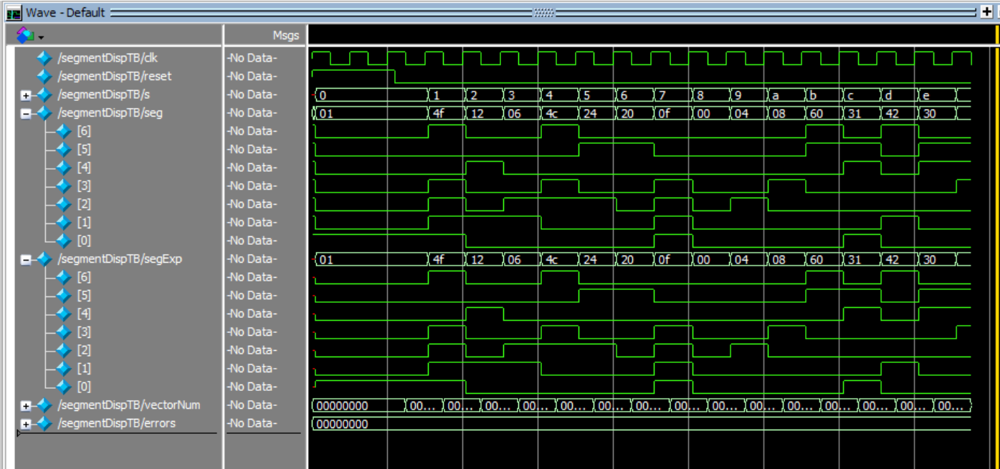

Lab 1: FPGA and MCU Setup and Testing
Hours Spent:
34
Introduction:
This lab required an implemented design on the FPGA to demonstrate functionality of an on-board high-speed oscillator via blinking an LEDs. To achieve this required a 24MHz frequency configuration on the high speed oscillator which was undivided down using a counter to achieve a blinking frequency of 2.4 Hz. Furthermore, 4 DIP switches which represented a binary input were used to configure a 7-segment display where each different binary value corresponded to a hexadecimal representation on the segment display. Design and Testing Methodology: Onboard the FPGA lies the HSOSC which outputs a clock that operates at a frequency of 24MHz. Using a counter set to divide the operating frequency once it reached a value of 5M resulted in an LED blinking every 1/(2.4) seconds, which corresponds to 2.4Hz. This divider is instantiated in the top module. This LED was defined as led[2]
A seven segment display was placed on a breadboard which utilized a 3.3V source. 1kΩ current limiting resistors connecting to ground at the FPGA pins allowed for a safe amount of current to flow through the system. To control each led in the seven segment display combinational logic from a four input DIP switch was utilized where combinational logic from the switches would translate a binary value to its corresponding hexadecimal value which would appear on the seven segment display. This display ranged from 0 to F as the four different switches corresponded to 16 total configurations.
In total three LEDs were utilized where led[2] corresponded to the blinking 2.4Hz signal, led[1] utilized the combinational DIP switches which would only activate if both s[3] & s[2] were high. led[0] was configured as an xor relying on the inputs of the first two DIP switches s[1] ^ s[0]. Technical Documentation: The source code for this project can be found in the associated Github repository here: put link here
Block Diagram:
Figure 1 illustrates a block diagram of the architecture of the design for lab 1. The top module takes a 4 bus input, which corresponds to the 4 DIP switch. The dipswitches input into a submodule called segmentDisp which controls the seven segment display. Outputting from segmentDisp are the 7 corresponding led’s on the seven segment display which are what control when each individual led on the display lighting up. These are connected to Pins 3, 45, 20, 12, 18, 44, and 9. The DIP switches also pass into an “and” gate and an “xor” gate which control two leds off the board. Lastly, the built in HSOSC controls a timer which then outputs a 2.4Hz signal which controls a third led.
Schematic:
My schematic, figure 2, illustrates four switches which connect into the FPGA block ICE40UP5K-S648. Each switch connects to a corresponding pin where there is a 100KΩ internal resistor that then connects to the 3.3V supply. Output from the FPGA pins, specifically pins 48, 2, and 47, connect to an led which then has a 1kΩ pull down resistor. A 3.3V from the FPGA powers the HD5P-511A seven segment display which internally has 7 leds that connect to a 1kΩ resistor to allow for a minimal current to enter the FPGA into its corresponding ports.
Results:
The design met all the intended design objectives. A testbench was written to ensure that the three leds flash when their requirements are met as well as ensure that the seven different leds on the seven segment display output correctly based on the input logic of the DIP switches.
To test this, a submodule testbench was written which directly ensures the seven segment logic works as intended, then a top module testbench was written to make sure everything works as intended. All passed and the physical outputs match as well.

AI Prototype:
I asked ChatGPT to Write SystemVerilog HDL to leverage the internal high speed oscillator in the Lattice UP5K FPGA and blink an LED at 2 Hz. Take full advantage of SystemVerilog syntax, for example, using logic instead of wire and reg. Here Chat gave me this code as a response: //=========================================================== // Blink LED @ 2 Hz using iCE40UP5K internal HFOSC //=========================================================== module led_blink ( output logic led // Active HIGH LED output );
// ----------------------------
// HFOSC Primitive Instantiation
// ----------------------------
// Available DIV settings:
// 2'b00 = 48 MHz
// 2'b01 = 24 MHz
// 2'b10 = 12 MHz
// 2'b11 = reserved
logic clk_48mhz;
SB_HFOSC #(
.CLKHF_DIV("0b00") // Select full 48 MHz
) u_hfosc (
.CLKHFEN(1'b1), // Enable HFOSC
.CLKHFPU(1'b1), // Power up HFOSC
.CLKHF(clk_48mhz)
);
// ----------------------------
// Parameters
// ----------------------------
localparam int COUNT_MAX = 24_000_000 - 1; // 0.5s @ 48MHz
localparam int COUNTER_WIDTH = $clog2(COUNT_MAX + 1);
// ----------------------------
// Registers
// ----------------------------
logic [COUNTER_WIDTH-1:0] counter = '0;
// ----------------------------
// Counter + LED Toggle Logic
// ----------------------------
always_ff @(posedge clk_48mhz) begin
if (counter == COUNT_MAX) begin
counter <= '0;
led <= ~led; // Toggle LED every 0.5 sec
end
else begin
counter <= counter + 1;
end
endendmodule
The way Chat used syntax is a bit surprising with putting dashed lines to separate the code. Also the way it created variables is in all caps which is different from how I usually write code. Also this module only has one output and no inputs. When I tried to synthesize this code it did not pass:
Error message: > prj_open “C:/MicroP/Lab1/Lab1.rdf” C:/MicroP/Lab1/Lab1.rdf > prj_add_source “C:/MicroP/Lab1/source/impl_1/ChatGPT.sv” > prj_run PAR -impl impl_1 0Running “Place & Route Design” failed > prj_run Export -impl impl_1 0Running “Export Files” failed When I pasted this error into Chat, Chat told me:
Got it üôÇ ‚Äî you‚Äôre getting PAR (Place & Route) failed in Lattice Radiant when trying to build the SystemVerilog code I gave you. This usually isn‚Äôt caused by the syntax itself but rather by one of these common issues: The SB_HFOSC primitive isn‚Äôt recognized or isn‚Äôt enabled.
The SystemVerilog file isn’t properly added as a source in your project.
Your constraints file (.lpf) doesn’t properly map the LED pin.
There’s a mismatch between your synthesis settings and the iCE40UP5K device.
You’re using .sv but Radiant sometimes defaults to treating HDL as Verilog-2001 unless set explicitly. //=========================================================== // led_blink.sv // Blink an LED at 2 Hz using the Lattice iCE40UP5K HFOSC //===========================================================
module led_blink ( output logic led // Connect this to your LED pin in .lpf );
// ------------------------------------------------------
// Internal HFOSC Instantiation (Lattice-specific primitive)
// ------------------------------------------------------
logic clk_48mhz;
SB_HFOSC u_hfosc (
.CLKHF(clk_48mhz), // Output clock
.CLKHFEN(1'b1), // Enable HFOSC
.CLKHFPU(1'b1) // Power up HFOSC
);
defparam u_hfosc.CLKHF_DIV = "0b00"; // Set HFOSC to 48 MHz
// ------------------------------------------------------
// Parameters for 2 Hz LED Blinking
// ------------------------------------------------------
localparam int FREQ_HZ = 48_000_000; // HFOSC frequency
localparam int HALF_PERIOD = FREQ_HZ / 4; // 2 Hz blink = 0.5s ON + 0.5s OFF
localparam int COUNTER_WIDTH = $clog2(HALF_PERIOD);
// ------------------------------------------------------
// Registers
// ------------------------------------------------------
logic [COUNTER_WIDTH-1:0] counter = '0;
// ------------------------------------------------------
// LED Blinking Logic
// ------------------------------------------------------
always_ff @(posedge clk_48mhz) begin
if (counter == HALF_PERIOD - 1) begin
counter <= '0;
led <= ~led; // Toggle LED every 0.5 seconds
end else begin
counter <= counter + 1;
end
endendmodule
I tried to recompile it using this new code, but it honestly is still very broken and I do not think Chat is very close to properly doing this, but if I spent more time thoroughly explaining my module and what I expect my inputs and outputs to be perhaps it could get it correct.